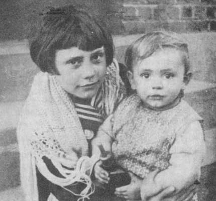
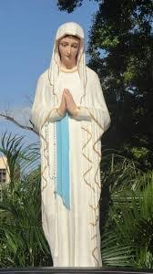
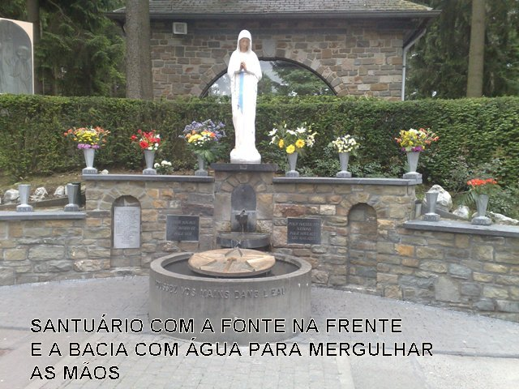

AS APARIÇÕES DE
“NOSSA SENHORA”
BANNEUX
A Vila Banneux era um pequeno povoado muito pobre existente no Município de Louveigne, na Bélgica, a 25 Km da capital Liége (capital do Município) e por isso mesmo, tinha o nome de Banneux, querendo significar uma Vila Comum, Vila Banal e Paupérrima. Por ocasião da Segunda Grande Guerra Mundial, a Vila ficou ilesa dos bombardeios, das invasões e ataques dos alemães, que nem passaram por lá. O fato levou o povo Católico da região, que sempre rezavam e suplicava a proteção Divina, a considerar que NOSSA SENHORA havia alcançado de DEUS a graça que protegeu o lugarejo e as famílias, da invasão nazista. Terminada a guerra, os administradores da região procuraram o Governo em Liége, que era a capital da Província, conseguindo um decreto oficial para alterar o nome do povoado em homenagem a MÃE DE DEUS, passando a ser denominado “NOTRE DAME DE BANNEUX”.
AS APARIÇÕES DE NOSSA SENHORA

Bem defronte a casa residencial, havia do outro lado da estrada, uma grande plantação de pinheiros, que se estendia ao longo da estrada no plano visual, e crescia de maneira imensa em profundidade, alcançando longas e distantes áreas.
O senhor Juliano por sua formação não era um homem que cultivava a fé em DEUS. Não frequentava as solenidades na Igreja, não rezava e não ensinou os seus filhos a fazer orações e nem a crer no DEUS DA VIDA. Luisa, assoberbada com os muitos filhos e as providências domésticas, ela que nunca deixou faltar o necessário a família, estava totalmente absorvida pelo trabalho, e assim, também permanecia indiferente a religião. Mariette a filha mais velha, ajudava a sua mãe nos serviços caseiros, fazendo mandatos aos locais próximos, e também, dando total assistência ao seu irmão menor que ainda era um bebê.
Certo dia, Mariette cumprindo
uma necessidade caseira a pedido da mãe, caminhando pela estrada de Tancrémont
encontrou um Terço perdido. Com carinho e muito cuidado, ajoelhou e
respeitosamente recolheu o Terço. Em casa, tratou de deixá-lo totalmente limpo,
e nas oportunidades caseiras, pediu a sua mãe Luisa que lhe ensinasse a rezá-lo.
E assim, com muito prazer, Mariette passou a rezar o Rosário com apreço e
dedicação, sempre suplicando a NOSSA SENHORA que intercedesse 
PRIMEIRA APARIÇÃO DE NOSSA SENHORA
Na noite do dia 15 de Janeiro de 1933, portanto no período de inverno europeu, embora mais cedo tivesse caído um pouco de neve, às 19 horas o tempo estava agradável e convidativo ao passeio. Mariette sentou-se na janela da cozinha que dava para o jardim e olhava o tempo, enquanto esperava o seu irmão Julien, que voltava do trabalho e estava atrasado, porquanto o horário dele era 18 horas em casa. De repente, viu a poucos metros da janela da cozinha, uma moça linda, que parecia ser toda de luz, com um brilho maravilhoso! Na alegria e no susto do acontecimento inesperado, gritou para sua mãe que cuidava de providências na cozinha: “Olha mãe, é NOSSA SENHORA! ELA está sorrindo para mim!” E assim falando, imediatamente pegou o Terço e começou a rezar, olhando sempre para a Aparição, que se mantinha tranquila e sorridente. NOSSA SENHORA então fez um sinal com a mão, convidando Mariette a se aproximar. A menina logo se movimentou para sair da janela e ir ao encontro daquela maravilhosa Dama, mas foi interceptada pela mãe, que olhando na janela e não enxergando ninguém lá fora, desconfiou, e logo pensou que se tratasse de alguma bruxaria. E por isso fechou a porta e colocou a tranca, para ninguém sair. Mariette então voltou correndo para a janela da cozinha, mas a “Dama Luminosa” já havia desaparecido.
SEGUNDA APARIÇÃO DE NOSSA SENHORA

As conversas em casa se multiplicaram e ganharam um sentido religioso, de respeito e amor as leis de DEUS. Inclusive, as coisas começaram a mudar no comportamento do casal, que também passaram a rezar e a participar das orações em casa, no jardim e na estrada.
TERCEIRA APARIÇÃO DE NOSSA SENHORA
No dia seguinte, dia 19 de Janeiro, Mariette mesmo sem ter qualquer aviso da VIRGEM MARIA, estava com um forte pressentimento de que a MÃE DE DEUS voltaria a visitá-la naquela noite. Como eram 19 horas e estava uma noite meio fria, inclusive nevando com pouca intensidade, usou um capote velho de seu pai para se abrigar. Andou alguns passos na neve que estava no jardim e se ajoelhou num canto mais protegido, próximo a um pequeno arbusto de flores. O seu pai estava ao seu lado. Filha e pai começaram as orações do Rosário de NOSSA SENHORA. Depois de alguns minutos, num grito de alegria, ela falou: “Aí está ELA!” E permaneceram em silêncio, pai e filha. Em seguida Mariette perguntou: “Quem é a SENHORA, mulher tão bonita?” NOSSA SENHORA respondeu: “EU SOU A VIRGEM DOS POBRES”. E levou Mariette pelo mesmo caminho do dia anterior (pela estrada). Caminhando ao lado da VIRGEM MARIA um pouco elevada do solo, em cima de uma pequena nuvem cinza, Mariette perguntou: “Ontem a SENHORA disse que essa nascente é especialmente dedicada a SENHORA. Porque dedicado a SENHORA?” A VIRGEM sorriu e disse: “Esse riacho é para todas as Nações... Para aliviar os doentes!” Assim, para não se esquecer de nada, Mariette repetiu essas palavras com uma voz bem clara, e disse: “Muito obrigado SENHORA! Muito obrigado!” NOSSA SENHORA olhando para ela falou: “Vou rezar para você, adeus”.